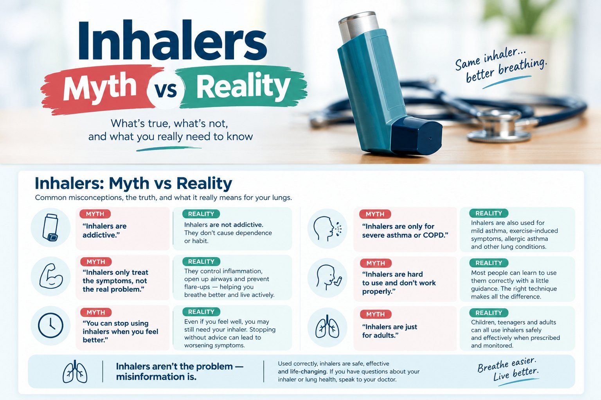

Patient guide
Inhalers: myth vs reality
Many people worry that inhalers are addictive, full of dangerous steroids, or something you are stuck with for life. Those worries are common, and they sometimes lead people to put off treatment or stop it without advice. Here is what current guidelines and research actually show, including where the risks are real.
The short answer
In asthma, guidelines recommend treatment that includes an inhaled steroid (called an ICS), even for many people with mild asthma. In COPD, inhalers that open the airways (bronchodilators) are the main medicines, and steroid-containing inhalers are used for selected patients. The right inhaler depends on your condition, your symptoms and the specific device. (1, 2)
How inhalers work
An inhaler delivers medicine straight to your airways. Some inhalers relax the muscles around the airways for quick relief. Others calm swelling and inflammation inside the airways. Some combination inhalers do both.
Because the medicine goes mainly to the lungs, you get less of it in the rest of your body than with steroid tablets. But it is not zero. High doses of inhaled steroids can have effects elsewhere in the body, and poor technique means less medicine reaches your lungs. (1, 9)
Seven common myths, checked
Tap a myth to see the answer.
Myth 1. “Inhalers are addictive. I will become dependent on them.”
Reality
Taking a daily preventer inhaler is treatment for a long-term condition, the same way you would take a blood pressure tablet. It is not addiction. Inhaled steroids are not habit-forming. (8)
If you find yourself reaching for a quick-relief inhaler (such as albuterol/salbutamol) often, that is a sign your asthma needs a review. It is not a reason to stop your inhaler, and not a reason to simply use more. (1, 6)
Myth 2. “Inhalers are a last resort for people with severe lung disease.”
Reality
Inhaled treatment is used from the start, not only in severe disease. For asthma, the international guideline (GINA) recommends treatment that includes an inhaled steroid for adults and teenagers. (1)
For COPD, inhalers that open the airways are the core medicines. Steroid-containing inhalers are added selectively, for example based on how often you have flare-ups, a blood test result (eosinophils), and whether you also have asthma. (2)
In adults with mild asthma, a combined inhaler (budesonide-formoterol) taken only when needed cut severe flare-ups by about 64% compared with a reliever that only opens the airways (SYGMA 1 trial), and by about 60% in the Novel START trial. (3, 5)
Myth 3. “The steroid in my inhaler is the same as the steroids bodybuilders use.”
Reality
They are different types of medicine. The steroids in inhalers (corticosteroids) reduce swelling in the airways. The steroids used for muscle building (anabolic steroids) work in a different way and are not used in inhalers. (9)
At usual doses, side effects are mostly local: a hoarse voice or a fungal infection in the mouth (thrush). You can lower the risk of thrush by rinsing your mouth with water and spitting after each steroid dose. With a pressurized inhaler, a spacer can also help. High doses over a long time can still cause effects elsewhere in the body, which is one reason to use the lowest dose that keeps you well. (1)
Myth 4. “Tablets or syrups are safer, or stronger, than inhalers.”
Reality
They do different jobs. For long-term control, an inhaler sends the medicine to the airways and exposes the rest of your body to less of it than steroid tablets do. Tablets may be needed for a severe flare-up, or for some people with severe asthma, but repeated courses or long-term use can cause important side effects across the body. (1, 9)
In COPD, inhaled steroids also carry specific risks and are not needed by everyone. (2)
Myth 5. “If I feel fine, I can stop my preventer.”
Reality
Feeling well often means the preventer is working, not that the airway inflammation has gone. Please do not stop asthma treatment on your own. Guidelines suggest considering a lower dose only after asthma has been well controlled for at least three months, with a plan and follow-up. They advise against stopping the steroid completely and going back to a quick-relief inhaler alone. (1)
If you use maintenance inhalers for COPD, ask your doctor before stopping or changing them. (2)
Myth 6. “Using my reliever a lot is fine. It keeps me safe.”
Reality
First, know which reliever you have. A reliever that only opens the airways (such as albuterol/salbutamol) gives quick relief but does not treat the swelling underneath. If you need it for symptoms more than twice a week (not counting use before exercise), book an asthma review. Guidelines no longer recommend relying on this type of inhaler alone for adults and teenagers with asthma. (1)
Some prescribed relievers also contain an anti-inflammatory steroid. The twice-a-week rule does not apply automatically to those. Follow the instructions for your own inhaler and your asthma action plan. Which products are available varies by country. (1, 10)
A Swedish study found that people who collected three or more reliever canisters a year had more flare-ups and a higher risk of death. This shows a link, not proof that the inhalers caused it. It is a reminder that needing a lot of reliever signals poorly controlled asthma. (6)
Myth 7. “I have used my inhaler for years, so my technique must be fine.”
Reality
Mistakes are very common. A review of 144 studies covering more than 54,000 people estimated that only about 3 in 10 used their inhaler correctly, and a similar share had poor technique. Each device needs its own technique. (7)
With pressurized inhalers, the usual mistakes are not breathing out fully first, pressing and breathing in at different times, and not holding the breath afterwards. A doctor, nurse or pharmacist can check how you use your inhaler in a minute or two. (7)
Do inhalers have real side effects?
Yes. What you might notice depends on the medicine, the dose and the device.
- Inhaled steroids
- A hoarse voice or thrush in the mouth. Rinse and spit after use. A spacer may help with a pressurized inhaler. High doses over a long time can have effects elsewhere in the body. (1)
- Quick-relief bronchodilators
- Shaky hands, a fast heartbeat or palpitations, especially at high doses. Get advice if these are strong or do not settle. (1, 2)
- COPD inhalers containing a steroid
- A higher chance of pneumonia, especially in people with more severe COPD. Whether a steroid is right for you depends on your own situation. It is not simply a case of avoiding steroids or giving them to everyone. (2)
If you have a side effect or a worry, talk to your doctor rather than stopping treatment on your own.
Getting the most from your inhaler
- Bring your own inhaler to a visit and show your doctor, nurse or pharmacist how you use it. Ask for a recheck from time to time. (1)
- If you use a pressurized inhaler, ask whether a spacer would suit you. Do not use a spacer with a dry-powder inhaler.
- Breathing style depends on the device. Pressurized inhalers usually need a slow, steady breath in. Dry-powder inhalers usually need a quick, deep breath. Follow the leaflet for yours.
- Rinse your mouth and spit after any inhaler containing a steroid.
- Take your preventer as prescribed and follow your written action plan.
- Check the dose counter and replace the inhaler when it runs out.
When to get help
Bottom line
The right inhaler, used the right way, helps control asthma and COPD. Nobody should stop or change prescribed treatment because of a myth. If you have worries about side effects, technique or cost, bring them to your doctor.
References
- Global Initiative for Asthma. Global Strategy for Asthma Management and Prevention. 2026 update. ginasthma.org
- Global Initiative for Chronic Obstructive Lung Disease. Global Strategy for Prevention, Diagnosis and Management of COPD. 2026 report.
- O’Byrne PM, et al. Inhaled combined budesonide-formoterol as needed in mild asthma. N Engl J Med. 2018;378:1865-1876.
- Bateman ED, et al. As-needed budesonide-formoterol versus maintenance budesonide in mild asthma. N Engl J Med. 2018;378:1877-1887.
- Beasley R, et al. Controlled trial of budesonide-formoterol as needed for mild asthma. N Engl J Med. 2019;380:2020-2030.
- Nwaru BI, et al. Overuse of short-acting beta2-agonists in asthma is associated with increased risk of exacerbation and mortality: a nationwide cohort study of the global SABINA programme. Eur Respir J. 2020;55:1901872.
- Sanchis J, Gich I, Pedersen S. Systematic review of errors in inhaler use: has patient technique improved over time? Chest. 2016;150:394-406.
- American Academy of Allergy, Asthma & Immunology. 5 Asthma Myths, Debunked. 2026. aaaai.org
- American Lung Association. Decoding and Debunking: Understanding Asthma Medicines. May 20, 2026. lung.org
- American Academy of Allergy, Asthma & Immunology. AIR and SMART Therapy for Asthma. 2026. aaaai.org